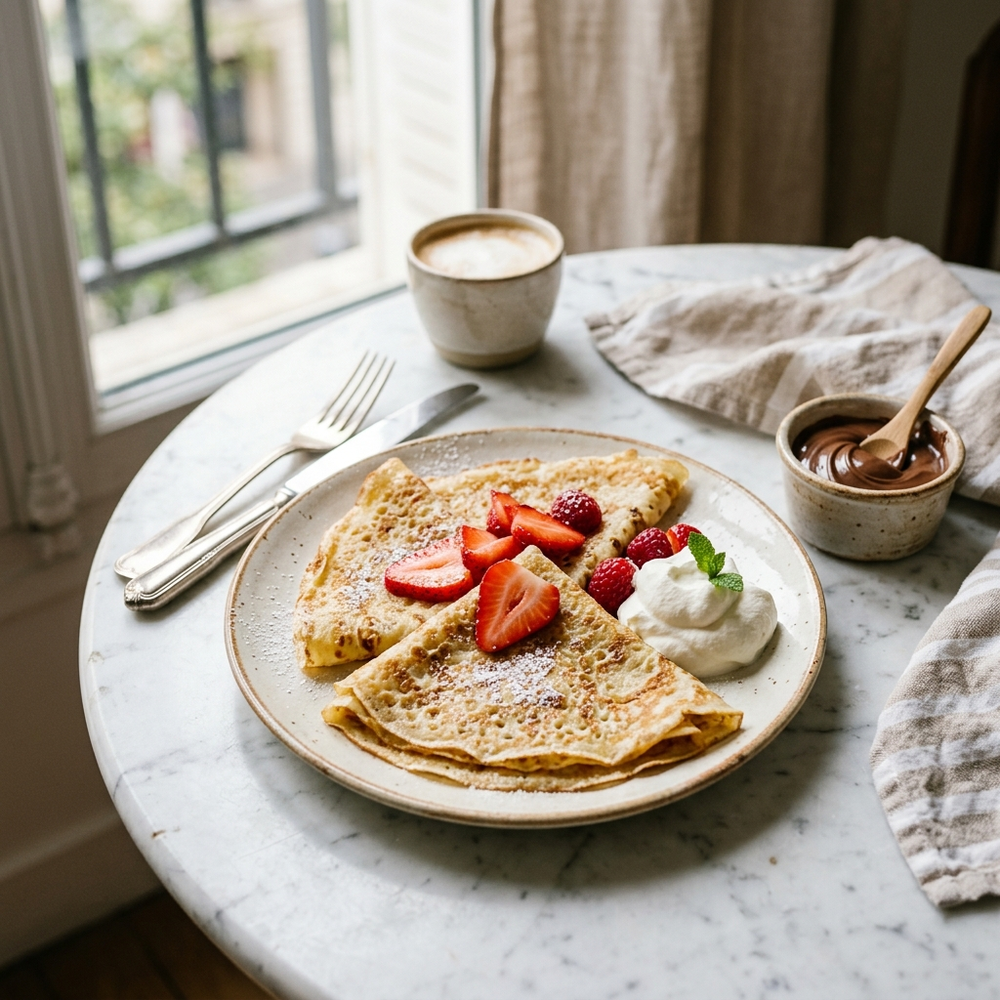

Description
Paper-thin, golden crêpes that work beautifully sweet or savory. A silky batter of eggs, flour, and butter — rested overnight for the best texture. Fill with Nutella and strawberries, or ham and cheese. Endless possibilities.
Ingredients
- 1 cup all-purpose flour
- 2 large eggs
- 1 1/4 cups whole milk
- 2 tbsp melted butter, plus extra for the pan
- 1 tbsp sugar (omit for savory)
- 1/2 tsp vanilla extract (omit for savory)
- Pinch of salt
- Serving ideas: Nutella, sliced strawberries, whipped cream — or ham, Gruyère, and a fried egg
Instructions
- Blend flour, eggs, milk, melted butter, sugar, vanilla, and salt together until completely smooth. A blender makes quick work of this. Rest in the fridge for at least 30 minutes (overnight is even better).
- Heat a non-stick pan (20–22cm) over medium heat. Brush with a little butter.
- Pour in about 3 tbsp of batter and immediately swirl the pan to coat the base in a thin, even layer.
- Cook for 60–90 seconds until the edges look dry and the underside is lightly golden. Flip and cook for 30 more seconds.
- Slide onto a plate and repeat with remaining batter, stacking crêpes as you go.
- Fill and fold as desired. Serve immediately.